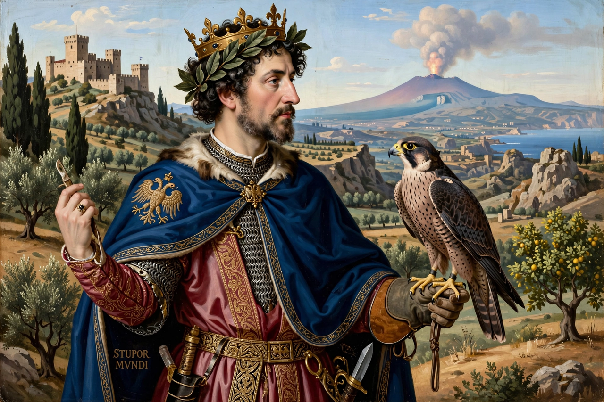

| Frederick II | |
|---|---|
| Holy Roman Emperor | 1220 – 1250 |
| King of Sicily | 1198 – 1250 |
| King of Jerusalem | 1225 – 1228 (by marriage) |
| Born | 26 December 1194, Jesi, Italy |
| Died | 13 December 1250, Castel Fiorentino, Apulia |
| House | Hohenstaufen |
| Parents | Henry VI and Constance of Sicily |
| Epithet | Stupor mundi — "Wonder of the World" |
Frederick II (1194–1250) was King of Sicily from 1198, King of Germany from 1212, King of Italy and Holy Roman Emperor from 1220, and King of Jerusalem from 1225. A member of the Hohenstaufen dynasty, he was one of the most powerful and remarkable rulers of the Middle Ages, nicknamed stupor mundi — the wonder (or astonishment) of the world.
Frederick was the son of Emperor Henry VI and Constance of Sicily, daughter of Roger II. Orphaned young, he was raised in Palermo under the guardianship of Pope Innocent III. Sicily's mixed Norman, Greek, Arab and Latin culture shaped him: he grew up multilingual, learned and intellectually curious. In 1211–12 German princes elected him king against the Welf Otto IV; Frederick crossed the Alps, won German support, and was crowned. Otto's defeat at Bouvines (1214) by Frederick's French ally settled the contest.
Crowned emperor in Rome in 1220, Frederick concentrated on Sicily and Italy. His Constitutions of Melfi (1231) created one of Europe's most centralised, professional administrations; he founded the University of Naples (1224), patronised the Sicilian School of poetry, wrote a masterly treatise on falconry (De arte venandi cum avibus), and kept a cosmopolitan court with Muslim scholars and soldiers. He built Castel del Monte and other castles across the south.
Frederick repeatedly postponed his promised crusade and was excommunicated by Gregory IX in 1227. Sailing in 1228 while still excommunicate, he recovered Jerusalem, Bethlehem and Nazareth by negotiation with Sultan al-Kamil (Treaty of Jaffa, 1229) and crowned himself King of Jerusalem — an achievement denounced by the papacy. His wars against the Lombard League and the popes (Innocent IV deposed him at the Council of Lyon in 1245) dominated his later years; anti-kings were raised in Germany and his son Enzo was captured by Bologna. Frederick died in Apulia in 1250, still at war with the papal–Lombard alliance.
Posterity has cast Frederick variously as a modernising rationalist ahead of his time, a brutal tyrant, or a quintessentially medieval monarch. His empire disintegrated after his death: the Great Interregnum followed in Germany and his dynasty was extinguished by Charles of Anjou within a generation.
This page was recreated from memory for the muse-webcrawl project.